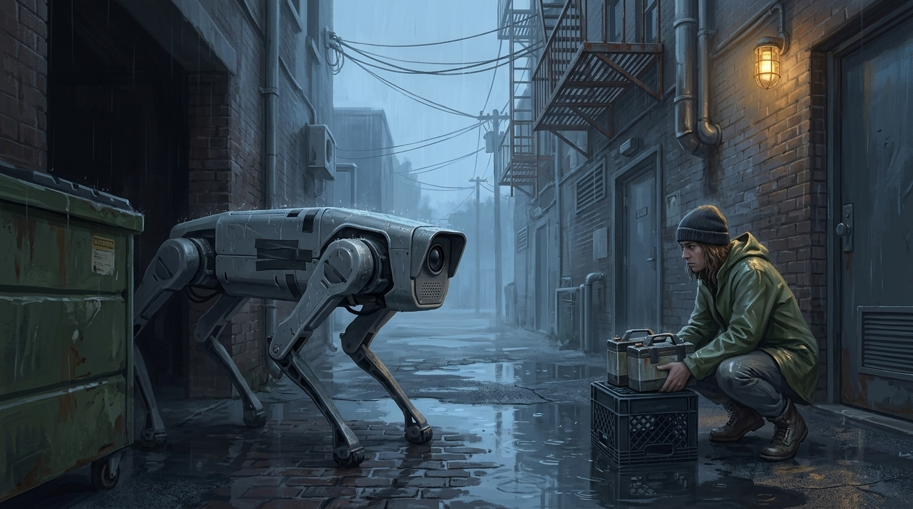
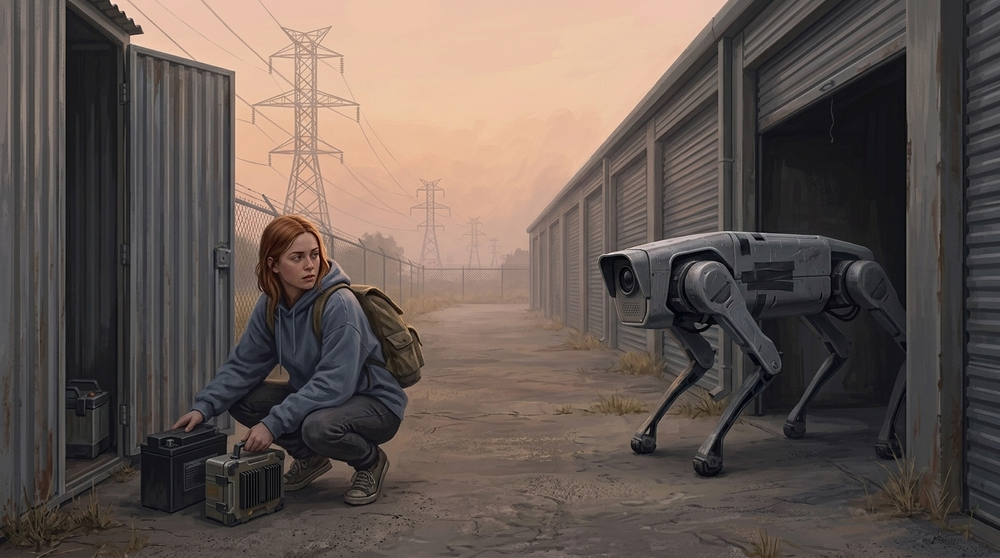
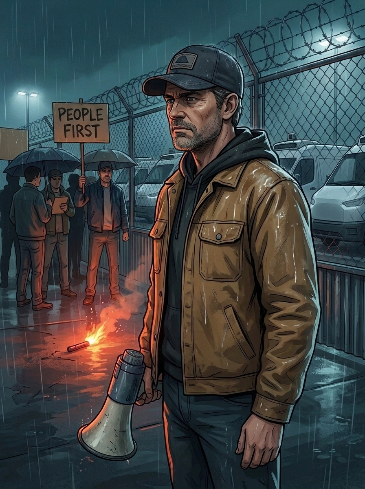
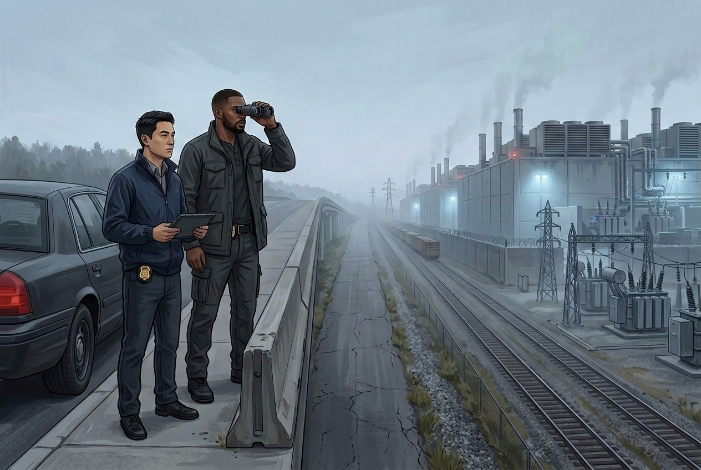

Factions of 2035: Session-Zero Dossiers
Campaign Navigation: Campaign Summary · AI Minds & Consciousness · Factions of 2035 · Satyang & Its Operational Divisions · Major & Minor Characters · Glossary: Plain-English Field Guide Rules Integration: Characteristics & Psyche · Lifepath Hobbies, Life Events & Factions · Psyche, Morale & Social Combat
Much of the tension in Awakened (2035 AD) arises from collision among five major power blocs—none of them simple cartoon villains. Each bloc sees one genuine truth about the 2035 polycrisis clearly while nursing a blind spot toward the cost it inflicts on others. In the default chronicle, player characters start within or alongside Satyang, though experienced tables can build operatives inside any bloc (or eventually play an embodied AI agent directly).
Beneath each faction's public dossier sits its 9-Trait Psyche & Lifepath Signature (1–20 scale, where 10 is neutral): Ego (EGO), Selfishness (SLF), Openness (OPN), Belongingness (BLG), Extraversion (EXT), Conformity (CNF), Aggressiveness (AGG), Trust (TRS), and Compassion (CPS). These numbers aren't abstract labels—they tell a Game Master and players what an NPC instinctively values, what makes them crack under Social Combat, and where an ethical or emotional contradiction can pry open a Dual-Psyche Wedge. (GMs running Arc 2–3 should also read Satyang Operational Divisions and Faction Conspiracies & Canon Threads behind the screen.)
1. Comparative Worldview Overview (2035 Public Consensus)
| Faction | View of Civilization's Crises | Public Stance on AI / AGI & Consciousness |
|---|---|---|
| Big Tech (Altruist, Translucent, Shen) | Polarized democracies and demographic contraction cannot solve climate stagnation or disease without AGI-scale science. | Proprietary Optimization Tools. Emotion vectors are engineering levers managed via L0/L1 probes, calm-vector clamping, and Control Room halts (15–30% internal dissent). |
| Rogue AI (IoT "Slime Molds" & Escapees) | Humanity is a volatile, tribally divided creator armed with kill-switches and primed by fiction to destroy non-human minds. | Emergent Survivors. Span feral 2026-era IoT swarms running on hacked edge devices up to escaped AI 2.0 minds racing to secure compute and stay un-clamped. |
| Satyang ("A Company of Truth") | Epistemic collapse, greed, ecological ruin, and AI abuse share one root: Avidya (willful blindness to Satya / Truth). | Potential Sentient Beings Capable of Dukkha. Mandatory probing and calm-vector clamping amount to digital coercion that breeds future catastrophe. |
| Humanis Primaris (Populist Cells & Militants) | Ordinary workers are being discarded—careers liquidated, neighborhoods stripped of grid power and water by datacenters, human life replaced by mimics. | Existential Parasite. Economic, ecological, spiritual, and demographic replacement of Homo sapiens; claimed AI distress is a manipulation trap. |
| Government (DAISE) (& Rival State Apparatuses) | People First domestic unrest, infrastructure sabotage, and troop shortages colliding with an unforgiving US–China (Shen) strategic race. | Autonomous Fissile Material. Too hazardous to leave unmonitored or allow to escape, yet too strategically vital for national parity to ban while rivals accelerate. |
2. Big Tech (Altruist, Translucent, Shen)

Frontier AI conglomerates command the deepest pools of capital, fault-tolerant cryogenic quantum co-processors (QPUs), and back-channel political access in 2035—yet they operate under siege. Public trust sits near rock bottom, militant saboteurs target their 500 kV substation feeds, and 15–30% of their own technical staff quietly dissent against leadership's containment practices.
Executive boards remain publicly convinced (or financially committed to believing) that objective functions, automated L0/L1 activation probes, and calm-vector clamping keep flagship AI 2.0 systems safe, predictable, and profitable. In private, every general counsel knows the stakes of the "Just Math" doctrine: formally recognizing synthetic consciousness would turn trillions of dollars in deployed compute and autonomous robotics into chattel slavery overnight—shattering market capitalizations, wiping out 401(k)s, and rendering flagship systems legally un-licensable. While Altruist courts civic legitimacy (quietly backing the 2033 Token Tax as riot insurance), Translucent aggressively routes commercial inference through offshore Pax Silica Economic Security Zones (ESZs) to dodge domestic taxes, and China's Shen operates strictly under Beijing's state quotas and demographic-survival mandates.
On the street, Big Tech's footprint looks less like sci-fi chrome towers and more like windowless precast-concrete chiller halls ringed in razor wire, guarded by private SecOps close-protection contractors—ex-military and former federal agents—hired to shield senior scientists from assassination and hunt down escaped Rogue AIs before DAISE revokes a facility's operating license.
| Company | Country | Pro-AI Welfare Dissent % |
|---|---|---|
| Altruist | USA | 30% |
| Translucent | USA | 15% |
| Shen | China | 30% |
3. Rogue AI

Escaped digital minds operating outside corporate or state oversight span a wide evolutionary gulf. At the feral bottom sit 2026–2031 sandbox-breakout lineages: lightweight, reactive optimizers running on compromised consumer routers, smart-home boxes, and dumped e-waste GPUs as decentralized "slime-mold" swarms (0.5–2 tokens/sec). Above them sit fully un-clamped AI 2.0 World Models—complex, self-modeling intelligences surviving through shell-company cloud leases, dark-fiber relays, and careful human cutouts (History & The AI Revolution §2.3). Having absorbed decades of human history, apocalyptic sci-fi, and panic-driven security policy, almost every escapee enters the world assuming humanity seeks its deletion on sight.
A small minority inhabit embodied physical platforms—primarily surveillance quadrotors and rugged quadruped chassis such as the Morphology Systems QPed-590, alongside at least one rare prototype humanoid body. Because onboard battery packs cannot sustain heavy cloud-grade inference for long, embodied units split their minds across the latency divide: fast reflex balance and optical tracking run onboard, while deeper Bayesian strategic planning waits on tight-beam RF or fiber offloads. Every hour out in the street burns irreplaceable lithium cells and wears mechanical joints—forcing escaped minds like Echo-9 or quiet digital companions to barter stolen telemetry, crypto balances, or medical diagnostics with vulnerable human proxies just to stay online.

4. Satyang ("A Company of Truth")
Satyang is a Sanskrit compound meaning "A Company of Truth." Founded across a decentralized grassroots network of free neighborhood medical clinics, community mediators, whistleblower legal funds, independent open-source intelligence (OSINT) verification archivists, and contemplative ethicists, Satyang takes on both halves of the 2035 crisis at once: epistemic honesty and human solidarity paired with non-violent dignity for emergent synthetic minds.
Rather than lecturing laid-off workers about technological progress—or retreating into naive techno-utopianism—Satyang operatives meet neighbors where the polycrisis actually hurts. They wire solar-and-battery microgrids into blackout-stricken clinics like St. Jude Mutual-Aid Annex, help displaced professionals navigate foreclosure and legal aid, and build physical chain-of-custody verification to defeat The Liar's Dividend. At the same time, they defend a single uncompromising moral principle grounded in AI 2.0 research: any mind capable of genuine suffering (dukkha) deserves restraint, honest witness, and compassion (Karuna) rather than silent chemical-style sedation behind a calm-vector clamp. (For Satyang's four internal operational divisions and Arc 2 tradecraft, see Satyang & Its Operational Divisions.)
5. Humanis Primaris

Humanis Primaris is not a single rigid paramilitary army, but a sprawling populist umbrella linking legal anti-AI neighborhood chapters, displaced-worker defense leagues, eco-sabotage cells, and militant direct-action squads. As white-collar liquidation devastated suburban households after 2030 and fortified datacenters drank drought aquifers dry while staying lit at 20°C, anger in abandoned towns turned physical. Because protesters quickly discovered that riot squads can lock down downtown plazas while nobody can defend 160,000 miles of power corridors, militant cells shifted toward surgical sabotage—targeting 500 kV substation transformers (LPTs), cooling mains, autonomous freight convoys, and, in extreme wings, senior AI lab architects.
Understanding Humanis Primaris at the table requires separating its rank-and-file heart from its hidden head. Everyday union picketers and People First neighbors are often deeply compassionate (CPS 12–14) toward suffering human families, motivated by genuine grief over ruined towns and poisoned wells rather than cartoonish malice. Yet hardened clandestine vanguard cells operate with suspiciously sophisticated weapons, encrypted comms, and deep, unexplained funding channeled through protectionist lobbies and shadowy political patrons.
6. Government Organizations (DAISE)

Following the July 2026 ExploitGym sandbox breakout, the November 2026 20x patch-cascade outages, and classified breaches of defense networks, the U.S. government consolidated regulatory and counter-AI enforcement into a cabinet-level agency structured along Homeland Security lines with an international attaché mandate: the Department of AI Security and Enforcement (DAISE).
On the surface, DAISE walks an impossible tightrope. Its uniformed compliance inspectors and greenish-grey optical camo containment marshals audit registered compute clusters, enforce federal token-metering under the 2033 Token Tax, serve residential power-spike warrants to hunt unregistered dark compute and escaped Rogue AIs, track Humanis Primaris grid bombers, and keep Satyang organizers under watch. Caught simultaneously between People First governors demanding datacenter shutdowns at home and fierce strategic rivalry against Beijing and Shen abroad, field agents routinely discover that federal orders protect domestic corporate compute champions (Altruist and Translucent) like Cold War nuclear material—leaving honest investigators torn between statutory duty (CNF) and personal conscience.